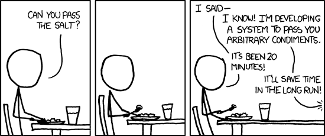 --- # Praat Scripting for fun and (minimal) profit Will Styler --- ### So, what parts of Praat do we need to worry about? --- ### The “Objects” window 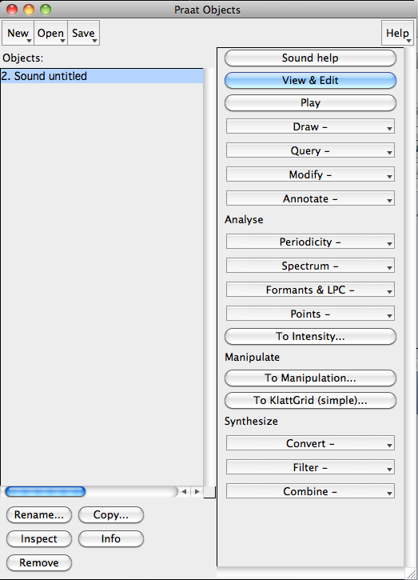 --- ### The “Editor” window 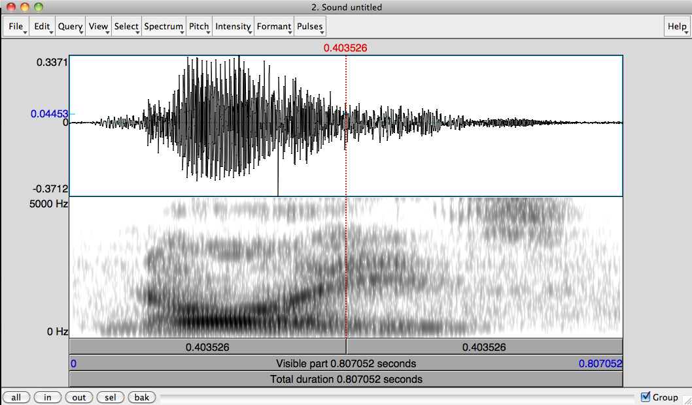 --- ### The “Picture” window 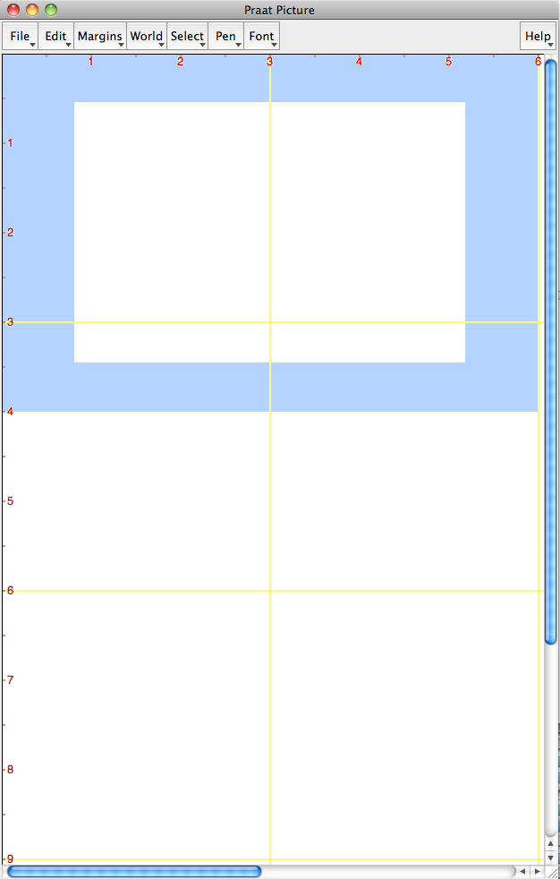 --- ### The “Info” window 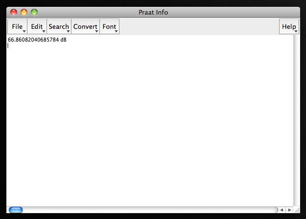 --- ### The “Help” window 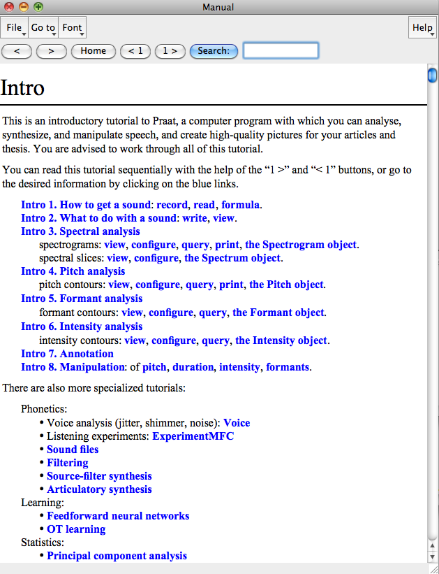 --- ### The Script Editor Window (Go to “Praat” -> “New Praat Script”) <img class="big" src="phonmedia/praat_script_window.png"> --- ### Why script in Praat? * Let the computer do the boring parts of your measurements * Be more consistent over large amounts of data * Get your work done faster with a computer co-pilot * Doing the same thing more than a few times is silly * You can do anything that you can do through menus in Praat * **You are the bottleneck in your data measurement speed** --- ### For Example: My Dissertation * I measured 29 features of nasality at two points per vowel per word * ... for a corpus of 3,823 tokens of English words * Manual measurement of the main feature (1 of the 29) takes around 1 minute * Getting just that one feature for each word in the corpus would require *1900 continuous hours of manual measurement* * Fully automatic measurement allows measuring all 29 features in about 12 minutes * ***... across the entire 3,823 word corpus.*** --- ### So, rather than 79 solid days of manual measurement... --- --- <img class="big" src="humorimg/areyouawizard.png"> --- ## No, I just write Praat scripts! <!-- .element: class="fragment" --> --- ### What you *cannot* do with Praat scripting * Label your data/speech recognition * You can label known data with [“Forced Align"](http://linguisticmystic.com/2015/03/10/a-phoneticians-software-toolkit/) * Work with programs that aren’t Praat (*) * Run statistics on your data (but [PraatR](http://www.aaronalbin.com/praatr/) exists!) * ... and you can dump your data into R scripting! * Anything that you can’t, eventually, do through the Praat UI * Generate measurements as consistent as hand measurements * Sanity-check your data and measurements (*) * *... but you can definitely do some things more easily!* --- ### Imagine you dropped out of grad school and bought a spaceship... --- ### You’re a factory superintendent on the planet Analogion Your alien factory workers... * Cannot hear you * Cannot talk with you except with canned phrases * Cannot interact with you * Don’t know when something goes wrong * ...aren’t terribly capable of independent thought --- In fact... * **The only thing they understand are simple written instructions which they complete exactly** --- ## Praat is basically an alien --- ### Your final product --- ### Your parts <img class="big" src="phonmedia/pscript_carparts.png"> --- ### "Put the wheels and racing stripe on the body!" --- When scripting, you will need to be a bit more specific than you normally would. * **Computers are stupid: They do exactly what you tell them to.** --- ### What is a Praat script? * A file with a series of commands for Praat and comments for humans --- # This is a comment, Praat ignores lines that start with # select Sound untitled # Plays the sound Play # Gets the duration Get total duration # Gets the amplitude Get intensity (dB) # Renames it Rename... My_awesome_sound # Prints the message into the Praat information window print “Script Finished” --- Praat has changed some of the scripting commands to become "more modern" * **The ones in this slideshow still work, though!** --- ### Your very first Praat script * Let's automate something you do all the time, in the same way each time * *Like making a broadband vs. narrowband spectrogram* --- ### Open Praat, then go to "New Praat Script" 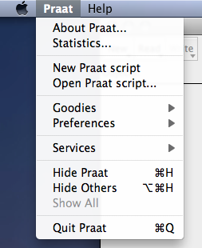 --- ### Capturing the commands using "History" Now, open a sound, and narrow the spectrogram <!-- .element: class="fragment" --> Then, go to the script window and “Paste History” <!-- .element: class="fragment" --> 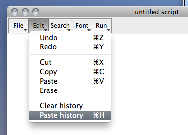 <!-- .element: class="fragment" --> --- ## History saves everything you do in Praat * This is the best (and sometimes only) way to find different Praat commands. --- ### Almost done! * You now have a few lines, one of which looks like ... Spectrogram settings... 0 5000 0.05 50 * That’s your first script. Make that line the only thing in the script window * Now save the script someplace handy, narrowband.praat * Now, you can add it to any menu as described in Section 11.2.2 of [Using Praat for Linguistic Research](http://savethevowels.org/praat) * **You just wrote your first Praat script!** --- <img class="big" src="humorimg/celebration.gif"> --- ## Praat scripting commands resemble the commands in the GUI --- ### Spectrogram settings... 0 5000 0.005 50 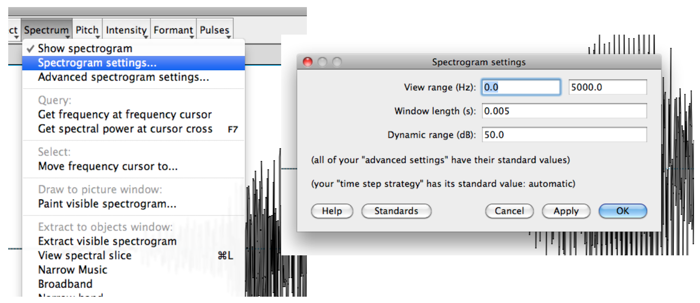 --- ### You can make the spectrogram broad-band again! * Spectrogram settings... 0 5000 **0.025** 50 --- ## To go fancier, we need more scripting knowledge! --- ### Variables are like pronouns for data. “Remember whats-his-name, that guy who brought the great pecan pie last year?” <!-- .element: class="fragment" --> “Yeah...?”<!-- .element: class="fragment" --> “Invite whats-his-name to Thanksgiving this year!”<!-- .element: class="fragment" --> > whatshisname$ = Find guy who brought pecan pie <!-- .element: class="fragment" --> > party-invite whatshisname$ <!-- .element: class="fragment" --> --- ### Assigning Variables variable = 1000 variable = Get number of intervals... '1' start = Get starting point... 1 2 end = Get end point... 1 2 midpoint = start + ((end - start) / 2) --- ### Get vocal tract length from F3 at cursor f3h = Get third formant length = (1715/(4 * f3h)) lcm = length * 100 print Your vocal tract length is 'lcm:1' cm --- ### Getting a bit fancier Sometimes, you want to automate more than one command **You can put multiple lines into a file, and Praat runs through them at a single command!** # Get the selected sound soundname$ = selected$ ("Sound") select Sound 'soundname$' # Rename it! Rename... 'soundname$'_resampled # Resample it, then write to file! Resample... 10000 50 Write to WAV file... ‘soundname$‘_10000.wav --- ### The Button/Skynet continuum * You can write scripts of various degrees of complexity * Some scripts run a single command quickly, and act as a new button * The user is completely in control, but it’s relatively slow * Some scripts run a large process, but keep the user involved * The user yields some control to gain speed * Some scripts go through a large process on their own, without your help * Fastest, but you don’t control any of the process while it’s running --- ## You'll always trade speed for control * Be realistic about your needs, both in time and precision --- # Working across files --- ### To work on many files, you need more than just the file(s) you have open --- ### Giving Praat files and information * Praat doesn’t know what a vowel is, and can’t find them natively * Sound files are annotated for Praat by making “TextGrids”. * These are separate companion files that list segments or points, along with their labels * Textgrids have “Tiers”, as many as you want, which can be used to annotate different levels of detail * You might have a “Word” tier and a “Vowel” tier. * Interval tiers mark spans (like vowels), point tiers mark moments (like releases) --- 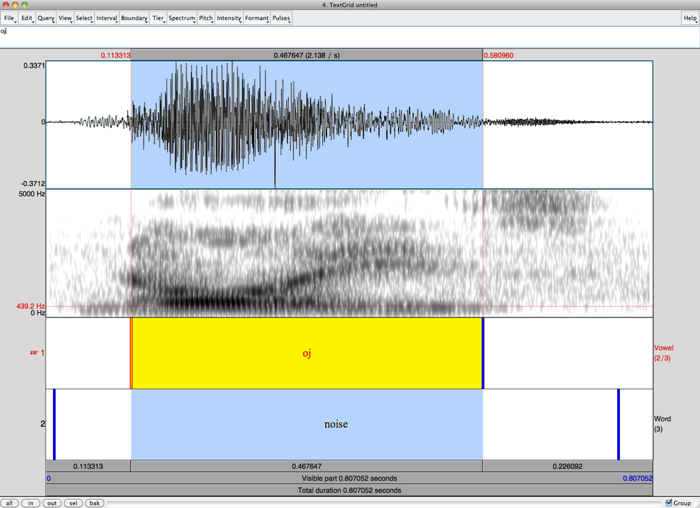 --- ### Textgrids are your way of giving Praat the information it can't figure out on its own * Once you’ve got files and textgrids, you can then pull in a whole batch of files * Praat can do something to every one of those files. * This happens through the magic of... --- ## 'for loops' --- 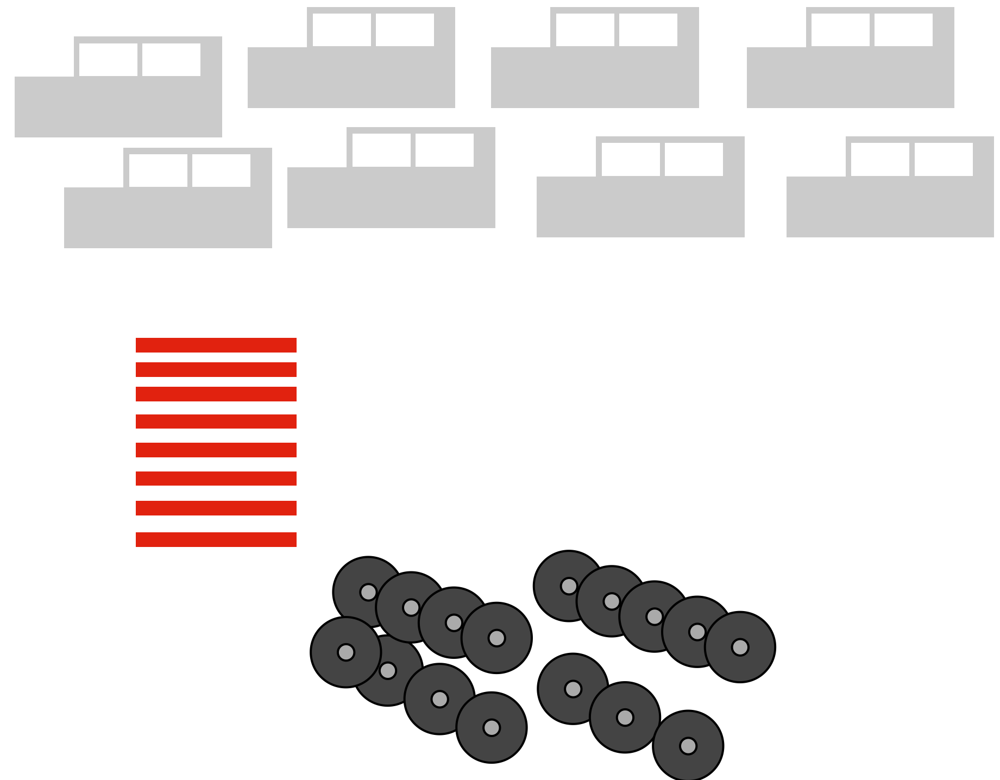 --- 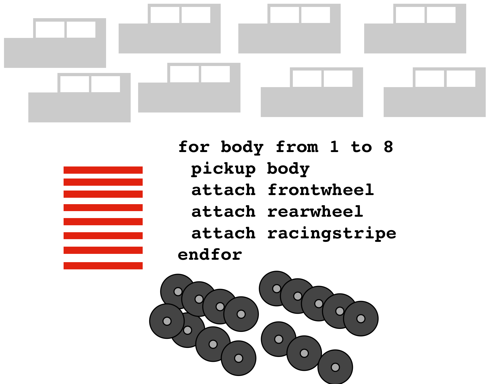 --- 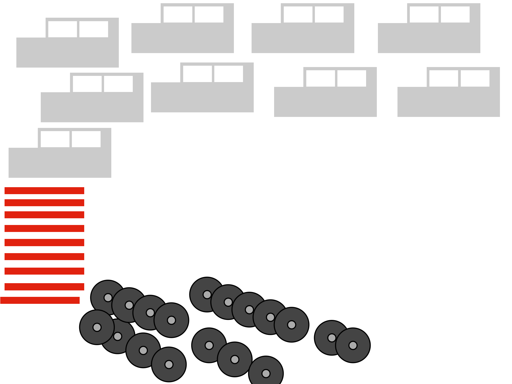 --- 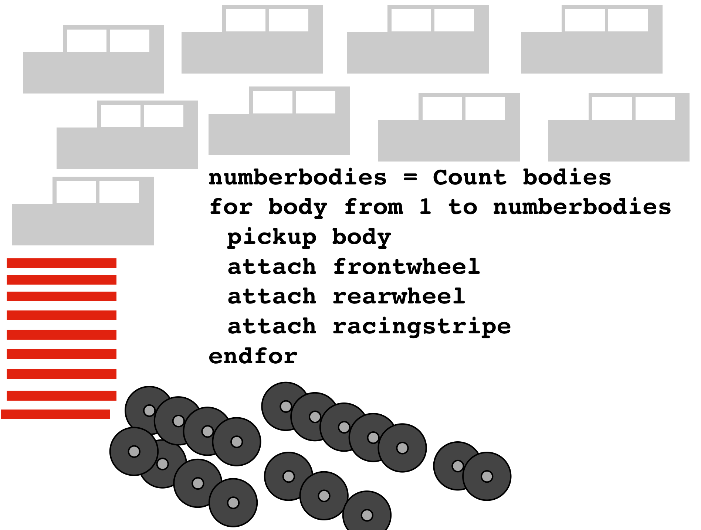 --- ### 'for' loops For loops iterate through large amounts of data, doing the same thing each time. They always have the format for [var] from 1 to [other var], followed by an indented block, ended with an endfor select TextGrid Sound1 number_intervals = Get number of intervals... 2 for k from 1 to number_intervals int_start = Get starting point... 1 'k' int_end = Get end point... 1 'k' int_duration = (int_end - int_start) print int_duration endfor # This code gets the duration of every interval and prints it --- ## Taking control with 'if' statements --- 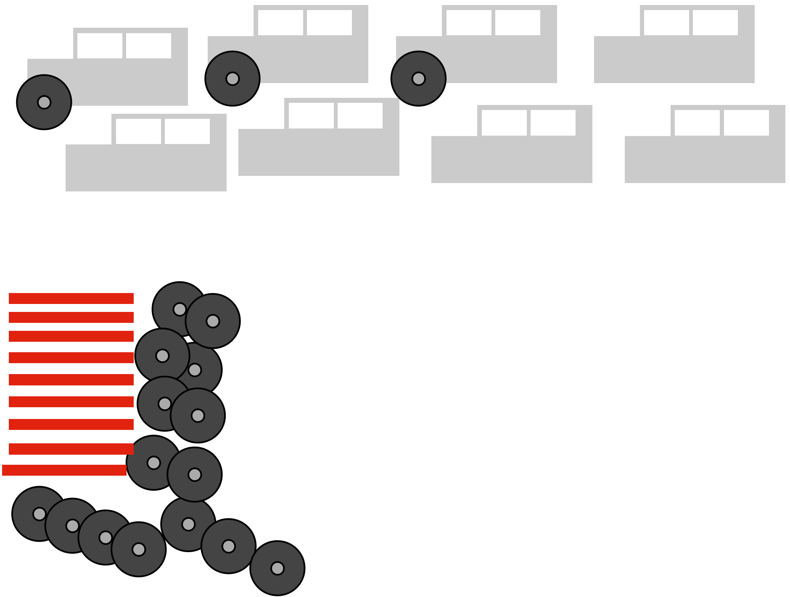 --- 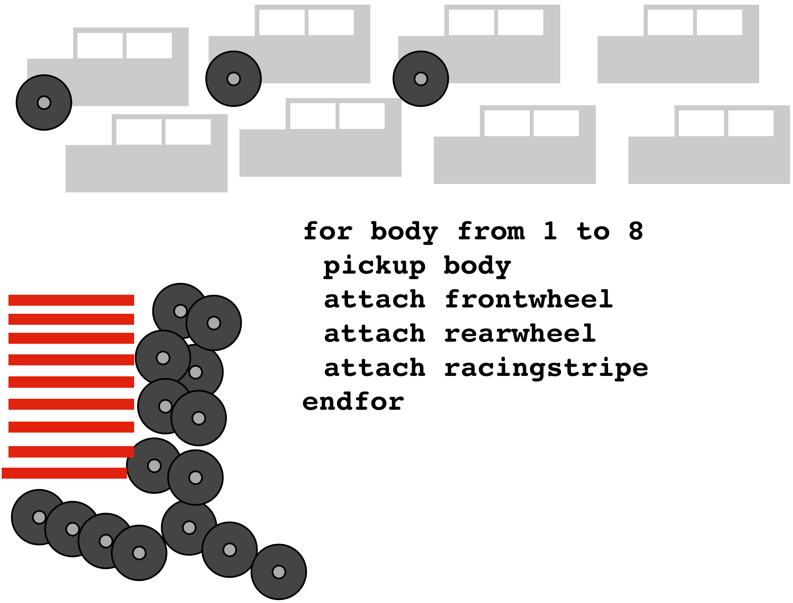 --- 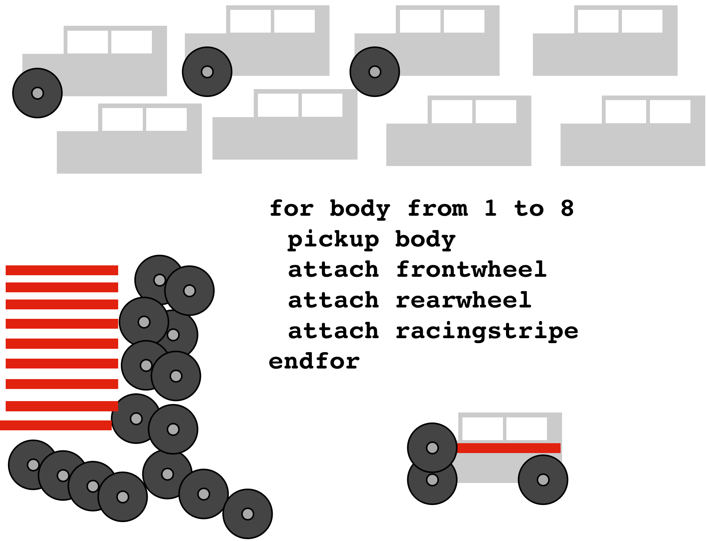 --- 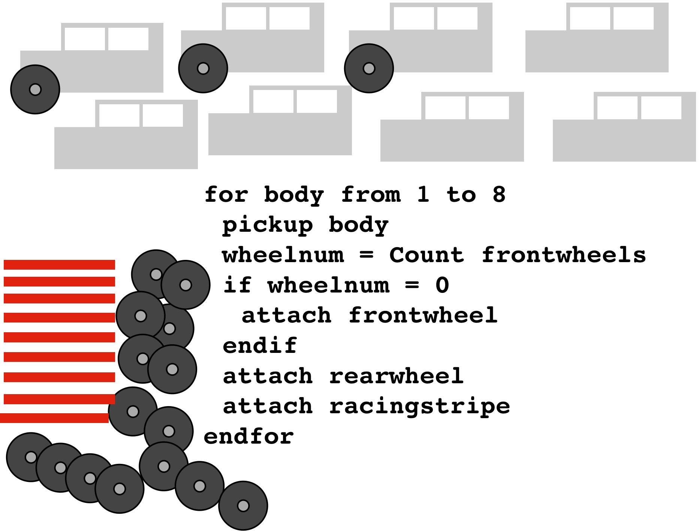 --- ### 'if' statements Used when a given action happens *only if another condition is met* Usually take the form if [var] = [value], indented block, endif --- ### If you want an example... select TextGrid Sound1 number_intervals = Get number of intervals... 2 for k from 1 to number_intervals int_label$ = Get label of interval... 1 'k' if int_label$ = "v" int_start = Get starting point... 1 'k' int_end = Get end point... 1 'k' int_duration = (int_end - int_start) print int_duration endif endfor --- ### Other Residents of Script-land * \# at the start of the line means 'comment', Praat will ignore the line * Adding a :number to a variable name ( variable:2 ) will round to that number of decimal places * The print command will print whatever follows it into the info window * *print duration* will print the contents of the variable duration * *print “duration”* will print the word “duration” * This is useful for debugging (print variables which might be bad!) --- ### Praat is weird * Don’t put decimals or unicode in Filenames * The symbol for “not equal to” is \<\> in Praat, rather than != or something sane * You’ll have to describe folder/file locations differently on a Mac vs. Windows * directory$ = "c:\Documents\test data\" (Windows) * directory$ = "/Users/will/Documents/test data/" (Mac) * Praat won’t always agree with itself from window to window * A single quotation mark can be your worst enemy --- ### Debugging * Your script will crash more times than it runs * Look at the error message, look at the line number it mentions, start there * Sometimes, the error message will give you good information * print the contents of variables, to make sure it's getting the right values * Use the “fail” command to crash the script at a given point (to make sure the script is getting there at all). * Just keep moving the command until you know just where the error occurs. --- ### Praat’s Scripting Help It's actually really good <!-- .element: class="fragment" --> 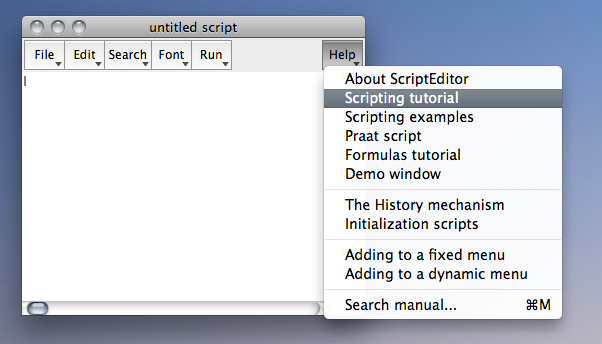 <!-- .element: class="fragment" --> --- ## In Defense of Cannibalism <img class="big" src="humorimg/alferdpacker.png"> --- ### Steal code. * If you find a script that does 90% of what you want, just add the 10% yourself * Give the author of the code credit with a comment * Don’t trust anybody else’s math * Especially not mine * Some code is just bad --- ## The majority of my scripts are open source https://github.com/stylerw ### Please steal them. <!-- .element: class="fragment" --> --- # The Automation Urge --- Source: http://www.xkcd.com/974/ --- ### ‘Automating’ comes from the roots ‘auto-‘ meaning “self”, and ‘mating’ meaning “screwing” Source: http://www.xkcd.com/1319/ --- ### When scripting, measurements can be… Accurate <!-- .element: class="fragment" --> Automated <!-- .element: class="fragment" --> Abundant <!-- .element: class="fragment" --> ## Pick any 2. <!-- .element: class="fragment" --> --- ### Why's that? * Humans only make sane measurements, computers don’t care * You know that his F0 is not 3000 Hz. Praat doesn’t. * You can find H1 and H2 easily. It can’t * You can figure out easily if the formant track is right. It definitely can’t. * Praat is a black box sometimes * **You need to double-check everything, or your data could be subtly wrong** --- ### Data Checks * Praat doesn’t know what sane measurements are * Take the data more times than you need, and throw out known bad data * Ask it to present you with the data to hand confirm * Figure out how Praat fails, and have it detect the failure mode, try again * Sometimes, you just need to back up 10 ms or something * If you’re feeling dirty, use averaging * Post-Hoc checking. Lots of it. Over, and over, and over. --- ### Think before you automate --- <img class="big" src="humorimg/xkcd_routine_task_1205.png"> [Source](https://xkcd.com/1205/) --- ### Think before you automate * Automating a task will cost you time. Will you gain enough back? * Automating a task will add noise. Can you handle that? * Automating a task will remove control. Do you need to have control? --- ### ... but don't be too reluctant * Time spent coding something is regained when you reuse it * You can build on your past approaches * Re-running the data basically comes free. * Most importantly, though... * **You feel like a wizard.** --- <img class="big" src="humorimg/wizardcat.jpg"> --- ### You will hate your life if you Praat script * Even after 10 years, I still have to debug everything I write, and regularly screw up. * You will get 50 crashes, caused by 50 little mistakes * You will question why you're bothering with this, and where your life went wrong * You will feel like you are alone in your pain --- ### ... but suddenly, it will work * You'll realize that your script hasn't crashed * ... and that data is pouring into the designated file * ... and that the data looks OK * ... and then, eventually, you have the greatest realization ever --- 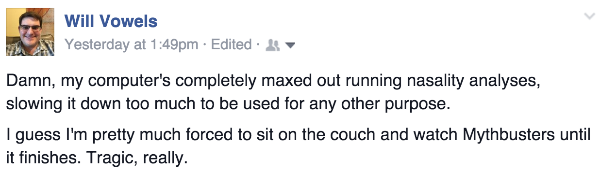 --- ## And you will realize that the world is a wonderful place * **... and you owe it all to Praat scripting** --- ### Get more scripting information Download useful examples (as well as a fun guide on using Praat) from: http://savethevowels.org/praat/ --- ### ... and please feel free to email me ***when*** you’re having trouble! --- # Let's look at an example! [Example script is here](https://raw.githubusercontent.com/stylerw/styler_praat_scripts/master/demo_formant_script.praat) --- # This part presents a form to the user form Measure Formants and Duration comment Sound file extension: optionmenu file_type: 2 option .aiff option .wav endform directory$ = chooseDirectory$ ("Choose the directory containing sound files and textgrids") # This will need to be changed to \ below for PC users directory$ = "'directory$'" + "/" resultfile$ = "'directory$'"+"formantlog.txt" header_row$ = "filename" + tab$ + "vowel" + tab$ + "Duration" + tab$ + "F1" + tab$ + "F2" + tab$ + "F3" + newline$ fileappend "'resultfile$'" 'header_row$' --- # List of all the sound files in the specified directory: Create Strings as file list... list 'directory$'*'file_type$' number_files = Get number of strings # This opens all the files one by one for j from 1 to number_files select Strings list filename$ = Get string... 'j' Read from file... 'directory$''filename$' soundname$ = selected$ ("Sound") filedur = Get total duration # identify associated TextGrid gridfile$ = "'directory$''soundname$'.TextGrid" if fileReadable (gridfile$) Read from file... 'gridfile$' select TextGrid 'soundname$' number_intervals = Get number of intervals... 1 --- # Go through each item for k from 1 to number_intervals select TextGrid 'soundname$' int_label$ = Get label of interval... 1 'k' #checks if interval has a label if int_label$ <> "" # Calc start, end, and duration of interval intstart = Get starting point... 1 'k' intend = Get end point... 1 'k' intdur = intend - intstart intmid = intstart + (intdur / 2) --- # Get all the formants! select Sound 'soundname$' To Formant (burg)... 0 5 5500 0.025 50 intf1 = Get value at time... 1 'intmid' Hertz Linear intf2 = Get value at time... 2 'intmid' Hertz Linear intf3 = Get value at time... 3 'intmid' Hertz Linear # Dump results into a file. result_row$ = "'filename$'" + tab$ + "'int_label$'" + tab$ + "'intdur'" + tab$ + "'intf1'" + tab$ + "'intf2'" + tab$ + "'intf3'" + newline$ fileappend "'resultfile$'" 'result_row$' endif endfor endif endfor # That's all! --- # A few other slides, just in case! --- ### Forms 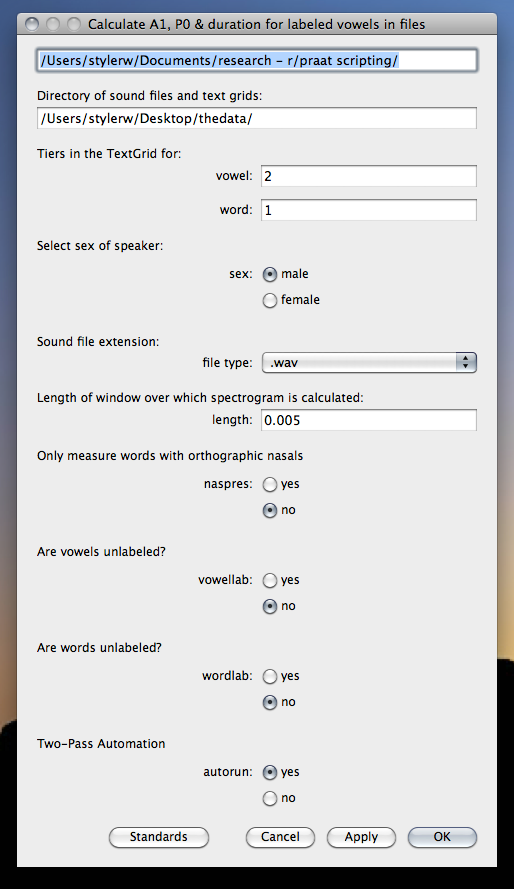 --- ### Forms * Forms show up at the very start of your script * They allow you to enter information at the start of every script run * Common variable changes don't need to be made in the script per-se * They let you make decisions about how the script is run * More info in the tutorial --- ### Pause Forms 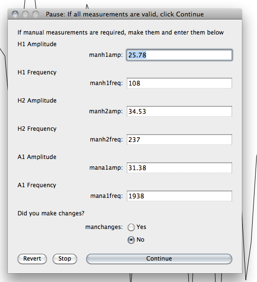 --- ### Pause Forms * These allow the script to pause so the user can fill in or confirm data * This also gives the user a chance to change the course of the script while it’s already running * The script will stop until the user restarts it * Also listed in the tutorial (“Controlling the User”) --- ### Procedures If you’re doing the same thing over and over in a script, make a procedure of it, and just call that procedure, then call it later in the script! procedure f0check if h1 < 90 error = 1 endif endproc h1 = [some variable] call f0check if error = 1 pause endif --- ### Editor scripting If you need access to things done in the editor window, you’ll need to do editor scripting This allows you to do things like cutting and pasting chunks of sound, and using the Formant and Pitch trackers within the editor window select Sound 'soundname$' Edit editor Sound 'soundname$' Select... startvowel endvowel Cut endeditor ---